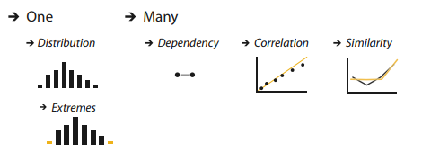
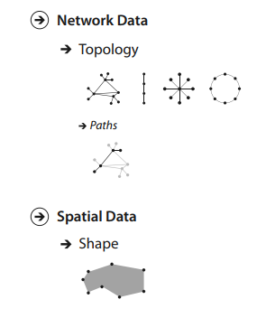
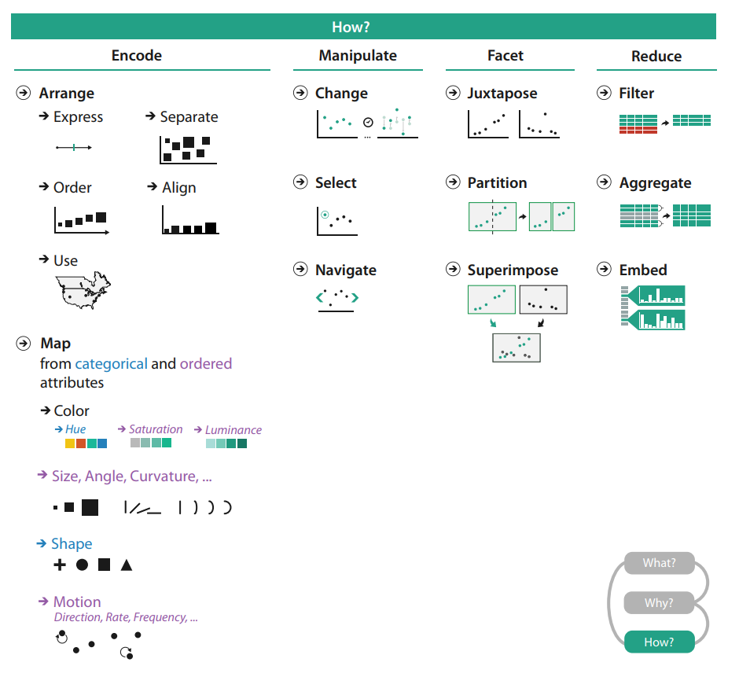

Vizualizacija podataka
Predavanje 03
Apstrakcija zadatka
- Prošli put smo se fokusirali na različite vrste podataka
- Danas ćemo se osvrnuti na razloge zašto se koristi vizualizacija
- Razlikujemo
- Akcije
- analiza
- pretraga
- upiti
- Ciljevi
- skup podataka
- atributi
- mrežni podaci
- prostorni podaci
- Akcije

Apstrakcija zadatka
- Zadaci vizualizacije bi se trebali promatrati u apstraktnom obliku, a ne u sklopu specifične domene kojoj problem pripada
- usporedba različitih zadataka
- Specifični zadaci se mogu svesti na oblik "usporedi podatke između dvije različite grupe"
- Isti alati se mogu koristiti za više ciljeva
- zašto se koristi vizualizacija - odgovor možemo prikazati kao kombinaciju akcije i cilja
Akcije
- Akcije koje opisuju krajnji cilj vizualizacije možemo podijeliti u tri razine:
- analiza
- pretraga
- upit
- Ove akcije su neovisne jedna o drugoj i nisu međusobno isključive - poželjno je opisati akcije na sve tri razine prilikom osmišljavanja vizualizacije
Akcije - analiza
- U slučajevima kada koristimo vizualizaciju kao alat za analizu podataka uglavnom postoje dva glavna cilja
- najčešći slučaj je konzumacija (consume) informacija koje su već prethodno generirane i spremljene u obliku prikladnom za prikaz ili obradu
- u tom slučaju također možemo napraviti dodatnu podjelu
- je li cilj konzumacije prezentirati trećoj strani nešto što korisnik razumije (present)
- je li cilj korisnika otkriti nove informacije ili analizirati informacije koje ne razumije do kraja (discover)
- je li cilj uživati u vizualizaciji u sklopu zanimanja za neku određenu temu (enjoy)
Akcije - otkriti
- Otkrivanje kao cilj se odnosi na korištenje vizualizacije kako bi se pronašlo novo znanje koje je to tada bilo nepoznato
- otkriće se može postići kroz promatranje neobičnih pojava ali istraživanje je motivirano potojećim teorijama, modelima, hipotezama ili jednostavnom slutnjom na nešto
- Pronalazak novih stvari
- generiranje novih hipoteza
- potvrda (ili pobijanje) postojeće hipoteze
- Često (ali ne isključivo) povezano sa znanstvenim istraživanjima
- Zašto se vizualizacija koristi - kako je osmišljena za te ciljeve
- odvojena pitanja
- jedno ne povlači drugo
Akcije - prezentirati
- Prezentacija kao cilj se odnosi na jesno prenošenje informacija, prenošenje priče kroz podatke ili navođenje publike kroz niz kognitivnih operacije
- Prezentacija (uz pomoć vizualizacije) se može odvijati u kontekstu odlučivanja, planiranja, prognoze ili nastavnih procesa
- Glavno odlika je korištenje vizualizacije kako bi se nešto specifično i poznato prenijelo odabranoj publici
- osoba koja prezentira poznaje informacije
- od prije
- saznala ih je upravo iz vizualizacije
- osoba koja prezentira poznaje informacije
- Način prezentacije ovisi o kontekstu i publici
- uživo ili snimljena prezentacija
- Ponovno imamo razliku između odluke "zašto" i "kako"
Akcije - uživati
- Uživanje kao cilj se odnosi na neobavezno korištenje vizualizacije
- U tom kontekstu ne postoji nužno želja za definiranjem ili testiranjem hipoteze ali i dalje cilj može biti zadovoljiti znatiželju
- Vizualizacija može biti jednokratna ili poticaj za ponovno korištenje istog alata
- Cilj korisnika ne mora jednak kao cilj onoga tko je osmislio vizualizaciju
Akcije - stvaranje
- Za razliku od korištenja vizualizacije u svrhu konzumiranja informacija, cilj korisnika također može biti i stvoriti (produce) nove materijale
- ponekad je cilj dobiti izlazne podatke koji će se odmah iskoristiti, kao ulaz u idući instancu
- u drugim slučajevima se stvoreni podaci mogu koristiti kaznije - za otkrivanje i prezentaciju
- svrha novih podataka ne mora uopće biti vezana za vizualizaciju i može se analizirati drugim alatima
- Razlikujemo tri krajnja cilja kod stvaranja informacija:
- označavanje, anotiranje (annotate)
- zabilježavanje, spremanje (record)
- izvođenje, izvlačenje (derive)
Akcije - stvaranje
- Cilj označavanja je dodati nove grafičke ili tekstualne anotacije koje su povezane sa jednom ili više već postojećih vizualizacija
- uglavnom kao ručna akcija korisnika
- ako je akcija povezana sa podatkovnim zapisima, anotacija sama po sebi može biti novi atribut te stavke
- Cilj zabilježavanja je spremiti ili zapisati elemente vizualizacije kao trajne podatke
- to može biti u obliku slike ekrana, popisa zabilježenih elemenata ili lokacija, vrijednosti parametara, zapisa interakcija ili čak anotacija
- ključna razlika u odnosu na označavanje je u trajnom spremanju
Akcije - stvaranje
- Cilj izvođenja ili deriviranja je proizvesti nove podatkovne elemente na temelju postojećih
- novi atributi se mogu izvući iz postojećih ili mogu biti pretvoreni iz jednog oblika u drugi
- važan dio procesa vizualizacije
- Koristiti izvorni skup podataka ili ga pretvoriti u drugi oblik?
- ovisi i koji vizualizacijski idiom koristimo
- povećava se raspon mogućih vizualizacija
- Novi tip podataka - izvedeni atributi (derivirani, transformirani)
- promjena jedinice °F -> °C
- promjerna tipa: °C -> [hladno, mlako, toplo]
Akcije - stvaranje
- Ponekad je za transformaciju potrebno dodatno znanje koje nije sadržano u izvornom skupu podataka (grad -> koordinate)
- Novi atributi također mogu biti dobiveni aritmetičkim, logičkim ili statističkim operacijama
- sami proces transformacije se može odvijati u više koraka
Originalni podaci
Izvedeni podaci
Akcije - pretraga
- Sve prethodno navedene akcije spadaju u kategoriju analize
- akcija najviše razine
- Također, sve prethodne akcije podrazumijevaju pretragu elemenata koji su zanimljivi u kontekstu vizualizacije
- Akcije pretraživanja možemo podijeliti u 4 kategorije ovisno o tome jesu li identitet i lokacija ciljanog podatka unaprijed poznati
- ako nam je unaprijed poznato što tražimo i gdje se nalazi onda je akcija pretrage jednostavno očitanje (lookup)
- tražnje poznatog podatka na nepoznatoj lokaciji je akcija pronalaska ili lociranje (locate)
- ukoliko ne znamo identitet podatka ali znamo gdje tražiti (uglavnom po atributu) onda je to razgledavanje (browse)
- ako ne znamo niti lokaciju podatka onda je to akcija istraživanja (explore)
Akcije - upiti
- Jednom kada je ciljani podatak (ili više njih) pronađen, najniža razina akcija je postavljanje upita nad tim podatkom
- Vrste upita možemo podijeliti u ovisnosti o rasponu ciljeva:
- identificiranje (identify) - jedan cilj
- prikaz karakteristika pronađenog podatka
- usporedba (compare) - više ciljeva
- zahtjevniji zadatak (složeniji idiomi)
- sažimanje (summarize) - puni skup mogućih ciljeva
- detaljni pregled svih podataka
- identificiranje (identify) - jedan cilj
- Primjer - rezultati izbora
- identificiranje - najviše glasova na jednom biračkom mjestu
- usporedba - rezultati na dva biračka mjesta
- sažimanje - ukupni rezultati jednog kandidata
Akcije
- Sažetak akcija:
- analiza
- konzumirati
- stvoriti
- pretraga
- lokacija
- cilj
- upiti
- identificirati
- usporediti
- sažeti
- analiza
Ciljevi
- Sve prethodno navedene akcije se odnose na neki cilj tj. neki dio podataka koji je od interesa korisniku
- Akcije uglavnom navodimo u obliku glagola, dok su ciljevi imenice
- Pojam cilja se podrazumijeva kod akcija pretrage i upita dok je kod analize više implicitan ali i dalje važan
- Ponovno možemo ciljeve podijeliti u četiri kategorije
- svi (potpuni) podaci
- atributi
- mrežni podaci
- prostorni podaci
Ciljevi - svi podaci
- Na najvišoj razini razlikujemo tri relevantna cilja za sve vrste podataka:
- trendovi (trend) - karakterizacija nekog uzorka u podacima na visokoj razini - povećanje, smanjenje, vrhunac ili ponor...
- izuzetak (outlier) - vrijednost koja se ne uklapa u ostatak podataka, anomalija ili devijacija
- značajka (feature) - bilo kakva struktura ili svojstvo koje nam je zanimljivo u kontekstu zadatka
Ciljevi - atributi
- Atributi su specifična svojstva koja su vizualno enkodirana
- Cilj niže razine za neki atribut je pronaći individualnu vrijednost
- Često je cilj pronaći ekstreme - min ili max u nekom rasponu
- Cilj više razine je distribucija svih vrijednosti za neki atribut
- neki ciljevi obuhvaćaju više atributa
- zavisnost (dependency) - vrijednost jednog atributa direktno ovisi o vrijednosti drugog
- korelacija (correlation) - ako su vrijednosti dva atributa međusobno povezane
- sličnost (similarity) - između atributa može biti definirana kao kvantitativna mjera

Ciljevi - mrežni i prostorni
- Pojedini ciljevi se odnose na specifične skupove podataka
- mrežni podaci definiraju odnose između čvorova i veza
- osnovni cilj u mrežnim podacima je razumjeti strukturu međusobne povezanosti tj. topologiju mreže
- specifičniji topološki cilj je putanja između dva čvora u mreži koja je prikazana sa jednom ili više veza (bridova)
- mrežni podaci definiraju odnose između čvorova i veza
- prostorni podaci su također jedan od primjera specifičnih skupova podataka
- kod takvih skupova je najčešći cilj razumijevanje i usporedba geometrijskih oblika

Idući korak
- Sve navedeno u prethodne dvije lekcije nas usmjerava prema posljednjem koraku u izradi vizualizacije - "How?" tj. pitanju kako izraditi vizualizacijski prikaz na temelju prethodnih odabira
- Metoda se mogu podijeliti na 4 glavne kategorije:
- enkodiranje (encode)
- manipulacija (manipulate)
- izdvajanje/naglašavanje (facet)
- reduciranje (reduce)
Idući korak
